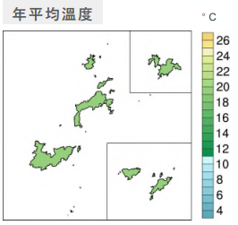
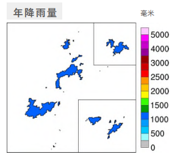

連江縣氣候變遷概述
主題一、地理位置與氣候特徵
連江縣（馬祖列島）位於臺灣海峽西北方，由 36 個島礁組成，土地面積約 30 平方公里。 氣候屬副熱帶海洋性氣候，四季分明，年平均氣溫約 19.3°C，較臺灣本島低。 冬季受東北季風影響強烈，寒冷潮濕；春夏交際多霧；降雨集中於 5-9 月的梅雨及颱風季。 [cite_start]由於島嶼地勢起伏大且無高山，不易產生地形雨，年降雨量約 1,000 毫米左右，水資源保存不易。
DATA: 地形圖 (TOPOGRAPHY)

DATA: 年均溫 (AVG TEMP)

DATA: 年雨量 (AVG RAIN)
主題二、過去 40 年觀測 (1980-2020)
[cite_start]根據歷史觀測資料，連江縣年平均溫度為 18.8°C；年降雨量中位數為 1,154.0 毫米。
溫度變遷趨勢 (TEMP TREND)
年平均氣溫每十年上升
+ 0.5°C增溫顯著 (1980-2020)
降雨變遷趨勢 (RAIN TREND)
年降雨量每十年減少
- 52.3 mm呈減少趨勢 (1980-2020)
DATA: 地形圖 (TOPOGRAPHY)
DATA: 年降雨量時間序列 (AVG TEMP)
主題三、未來推估 (全球升溫 2°C 情境)
[cite_start]在全球暖化 2°C 的情境下，與基期 (1995-2014) 相比，連江縣將面臨以下氣候風險：
年均溫上升
+ 1.3°C
Projected Warming
高溫36°C日數
+ 0.4 天
High Temp Days
最大一日降雨量
+ 13.5%
Max Daily Rainfall
*註：連江縣因緯度較高且受海洋調節，極端高溫天數增加幅度較台灣本島緩和，但強降雨強度仍顯著增加。
主題四、資料來源
本頁面資料源自國科會「臺灣氣候變遷推估資訊與調適知識平台計畫 (TCCIP)」發布之《縣市氣候變遷概述 2024》。
數據基於 AR6 統計降尺度資料與中央氣象署馬祖測站觀測紀錄。